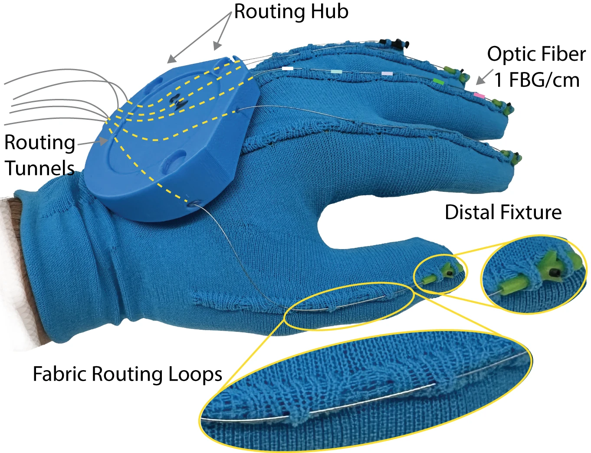

Glove Design
Each finger is instrumented with a 125 µm multi-core optical fiber containing three sensing cores with 26 FBGs each, spaced every 1 cm. Each FBG reflects a wavelength that shifts with local strain; combining the three cores gives local curvature and bending direction, which are integrated into a 3D fiber shape at 1 mm resolution and 60 Hz. Because curvature comes from differential strain between cores, common-mode effects such as temperature largely cancel.
Fibers are fixed at a 3D-printed fixture near the fingernail but otherwise slide freely through stitched dorsal fabric loops, minimizing interference with natural motion. On the back of the hand, a routing hub guides each fiber through a tunnel of known geometry to a shared outlet; these tunnels are what let us register every fiber into a common reference frame.
